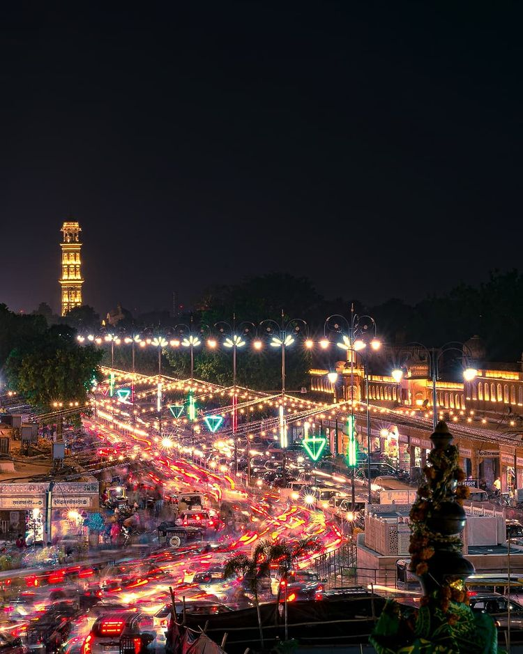
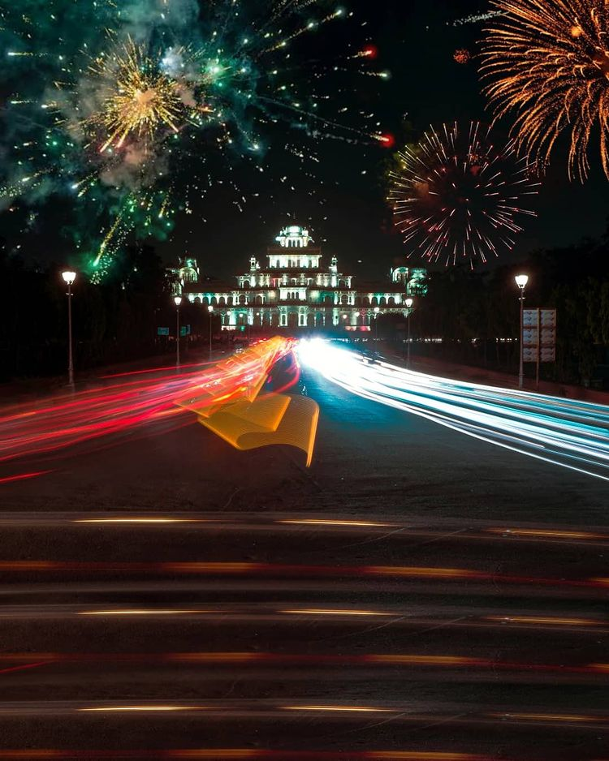
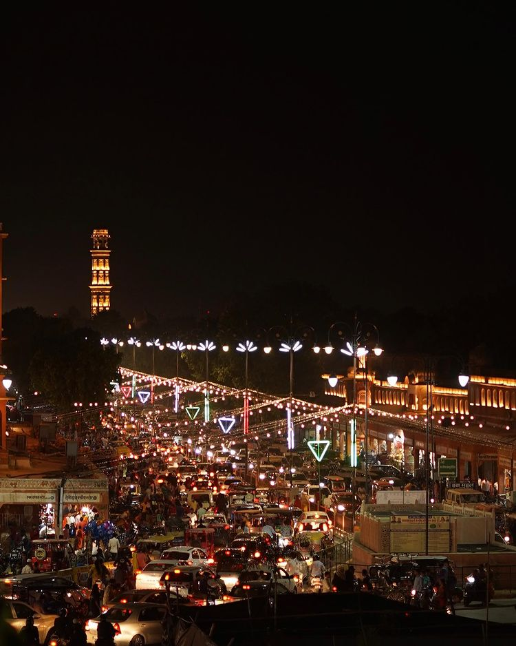
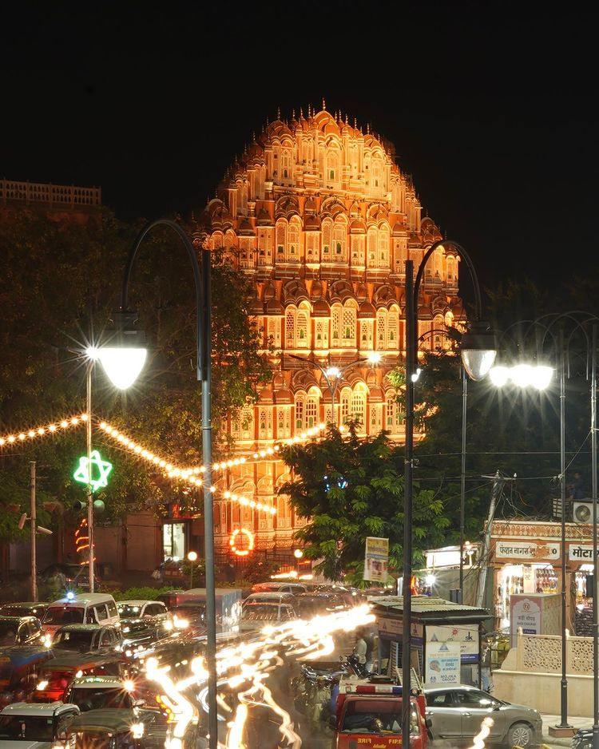
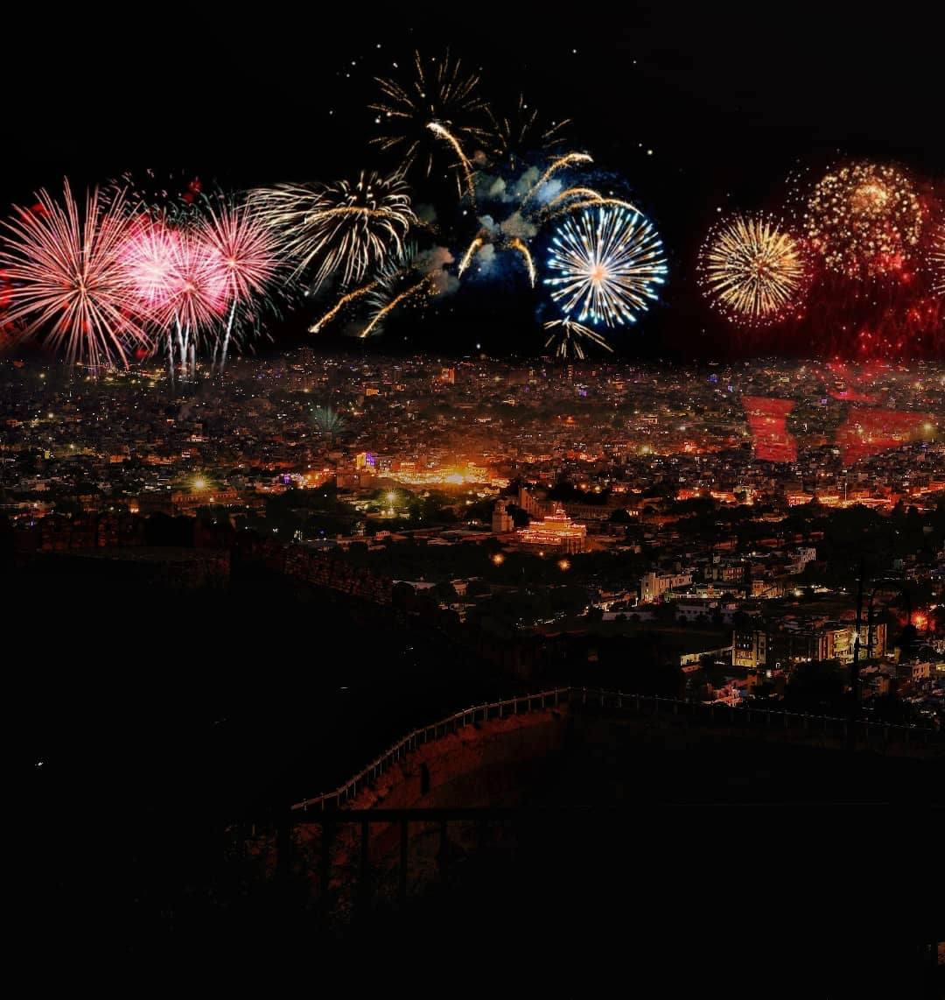

सबका JAIPUR HOME PLACES BLOGS VIDEOS Contact US
WEEKEND IN JAIPUR – THE PINK CITY
Jaipur is the capital of the state of Rajasthan, India and a perfect place to regroup after an all too
touristy stay in Agra for the Taj Mahal. Let’s talk about how was my weekend in Jaipur. Jaipur became known
as the Pink City in 1876 when Maharaja Ram Singh painted
the whole city pink to welcome Queen Victoria &
the
Prince of Wales. (Apparently pink is the color of hospitality and friendship, or the Maharaja just loved
pink) When wandering around Jaipur you’ll see a modern buzz of a large Indian city but can easily head
to
the old quarter to explore the pink city.
You can do a lot in a weekend in Jaipur and you can
easily see everything in a weekend or a few days.
Many
visitors just use Jaipur as a quick stop before heading further west into Rajasthan.
I decided to stay
for a
few days and plan the next week or so of my trip through India. The first day I hung out with friends I
made
at the Holi Festival in Mathura,
we explored Amber and the low valley beneath it. Walking or riding a
tukutk
around Jaipur you’ll see the usual cows but also camels and during Holi a painted elephant.
We spotted
monkeys and lots of peacocks as well making it the first place in India I’ve really seen some wildlife!
Places to Visit in Jaipur
1. Hawa Mahal2. City Palace
3. Amber Fort
4. Narhargarh Fort
5. Jaigarh Fort
6. Patrika Gate
7. Jal Mahal
8. Gatore Ki Chhatriyan
9. Akshardham Temple
10. Govind Dev Ji Temple
11.Birla Mandir
12.Galtaji Temple
13.Raj Mandir Cinema
14.Panna Meena ka Kund
Hawa Mahal
Hawa Mahal is a beautiful palace smack in the middle of the Pink City and free to walk around.
You can
stroll
around the inside of it but the best views and photos are from the main road. At night they light up Hawa
Mahal with beautiful colors in
all the windows of this towering structure. The palace was built with a
thin,
tall wall so that royal women could observe the street without being seen. When you head to
Hawa Mahal
you
can grab a drink or a snack across the street for an even better view!
City Palace
Once you are in the Pink City,
you will naturally be inclined to visit City Palace. It was constructed
by
Sawai Jai Singh II between 1729 and 1732 AD.
The palace complex comprises of Chandra Mahal and Mubarak
Mahal. Now, Chandra Mahal has been converted into museum that houses exclusive handcrafted products
and
other products that depict the cultural heritage of the kingdom. Not only will you enjoy
the
architecture,
you will be awe struck by the glorious view of
Pink City from here.
Amber Fort
Amber Fort is one of the most popular destinations in Jaipur but I found it
overpriced.
Go see the fort but I wouldn’t pay the 500 INR to enter! Bring a student ID and you can
explore the fort for only 100 INR but otherwise,
the view from the outside is nice and head down into
the village below to see Panna Meena ka Kund and other temples!
It is great to visit when you have only
one weekend in Jaipur.
Narhargarh Fort (Sunrise & Sunset)
Sunset from Narhargarh Fort is supposed to be the best in the city but sadly I didn’t get to see a good one.
So next time if you get to spend a weekend in Jaipur, make sure you do not miss the sunset. We stopped by
the fort just before sunset but
there was so much dust on the horizon that the sun disappeared. That’s
what
happens in a city with over 3 million people I guess right? Instead of paying 200 INR to go in the fort
and
watch the haze we explored the outside wall. You can pay another 200 INR to enter Padao Restaurant for
the
best views at sunset.
Jaigarh Fort
Literally known as the Fort of Victory, Jaigarh Fort houses
the world’s largest cannon, Jaivana. It was
built
as a defensive fort and was used to house weapons and other artillery.
This fort was the main symbol of
the
military prowess of Rajputs and had been an indirect or direct part of many famous historical wars.
It
is
highly fortified and spread over a distance of about 3km. Jaigarh Fort is located near
Amer and
Nahargarh
Fort and can be visited en-route.
Patrika Gate
The Patrika Gate in Jaipur is a famous monument
and tourist attraction in the capital city of Rajasthan. Located 30-minutes outside
of the city centre, the gate serves as an entrance to Jawahar Circle Garden. And many believe it to be one of
the most photographed spots in all of India.
Jal Mahal
Jal Mahal literally means “Water Palace”
and can be found in the middle of Man Sagar Lake. Whether its
for a
unique afternoon photo or to hang out with some locals and
shop at night the Water Palace is worth
visiting.
This is another great place to see the true beauty of Jaipur while enjoying the weekend in Jaipur. You’ll
drive by on the way to Panna Meena ka Kund
and the Amber Fort so just ask your driver to stop for a
photo!
You can’t actually enter the palace but you will likely see camels and
elephants among the usual cows
and
dogs that roam the streets.
Gatore Ki Chhatriyan
Surrounded by green hills, the Gatore Ki Chhatriyan is a
complex of temples and tombs in the foothills of
the
Nahargarh (Tiger) Fort. It was the royal crematorium for the majestic rulers of Rajasthan.
The beautiful
edifice also has a cenotaph for each of the more famous maharajas cremated there. Engraved with beautiful
Rajasthani carvings, the cenotaphs are one of the major attractions of the place.
The cenotaphs are
shaped
like umbrellas (chhatris) and hence
the place is called Gatore Ki Chhatriyan.
Jantar Mantar
Jantar Mantar is an astronomical observatory that dates back to 1734
was built under the commands of
Maharaja Sawai Jai Singh II. It houses the world’s largest sundial made out of stone,
in addition to
nineteen other architectural astronomical instruments. This place has been declared a UNESCO World Heritage
site and a visit to
Jantar Mantar definitely deserves to be on your list of things to do in Jaipur.
Akshardham Temple
Akshardham Temple is one of the well-known
tourist attractions of Jaipur. The temple is known for its
beautiful architecture,
magnificent idols, sculptures, and carvings. and is dedicated to the Hindu God,
Narayan. Akshardham temple provides a real glimpse of
Indian architecture, cultural heritage, and
sculptures of Hindu gods to the visitors.
It is located in the Vaishali Nagar, Jaipur.
Govind Dev Ji Temple
Housed within the City Palace complex,
Govind Ji Temple is another religious place to visit in the city.
As the name suggest,
the presiding deity here is Lord Krishna. It was Raja Sawai Jai Singh II, an ardent
Krishna devotee,
who brought to the idol of this temple from Vrindavan. It is said that the idol was
made by Bajranabh, the great-grandson of Lord Krishna.
Visit the temple to experience the serenity of
the place.
Birla Mandir
Also known as Laxmi Narayan Temple,
the Birla Temple is one of the most magnificent temples in Jaipur.
Built with resplendent white marble stones,
the temple stands against the backdrop of lush greenery and
presents a breath-taking sight. The walls of the temple are ornamented with various scenes and quotes from
the Bhagavad Gita.
This grand place of worship looks spellbinding when illuminated at night.
Galtaji Temple
Galta Ji is a series of Hindu temples that date back to ancient times.
This temple complex is known for
its brilliant architecture and religious significance. This place of worship is located within a thin
mountain pass
in the Aravalli Hills. There’s a natural spring that emerges from the hill and it fills up
the seven sacred water tanks located within the temple complex.
Raj Mandir Cinema
Raj Mandir is a meringue-shaped cinema complex
that has been enthralling movie buffs since 1976. Its
spacious and lavish interiors, stunning ceiling design,
and indirect lighting system, all come together
to make it an awesome movie viewing experience here. Enjoying a Bollywood masala flick here counts among
the popular things to do in Jaipur for couples.
Panna Meena ka Kund
Panna Meena Ka Kund was one of my favorite spots in Jaipur.
Save it in your ‘Weekend in Jaipur’ list
without
a question. Although its small and you’ll only spend a few minutes there
I found it very peaceful and
beautiful. The stepwell is hundreds of years old but well maintained since tourists aren’t allowed to go
down the steps.
Its in a part of the old city beneath Amber Fort and free to enter. I even found a
wonderful
temple nearby with a
welcoming priest who blessed me, told me a Hindu story and let me take plenty of
photos.
----------Jaipur त्यौहार ----------
Diwali Lighting 2k21
    सबका JAIPUR